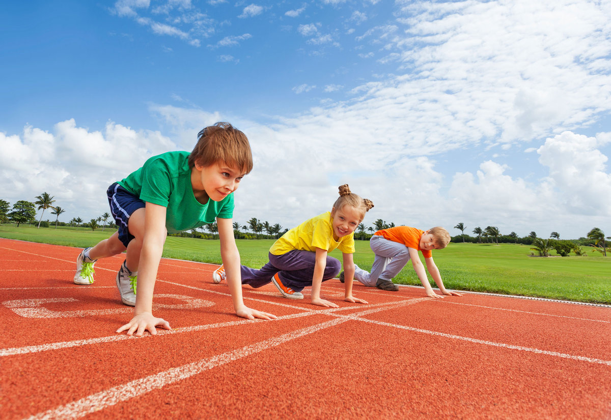

2. Процесс самовоспитания можно разделить на этапы:
3. Постоянно следить за намеченной программой действий и контролировать её в соответствии с поставленными задачами, достижениями, называется...
4. Вид анализа связанный с выделением положительных качеств, а также отрицательных, которые необходимо преодолеть называется...
5. Для реализации программы самовоспитания используют методы самовоздействия, направленные на совершенствование личности:
6. Главное в самовоспитании в физкультуре – это …
7. В чем заключается суть реализации миссии физического воспитания?
8. Где осуществляется физическое воспитание детей школьного возраста?
9. Что отражает суть понятия «спортивное воспитание»?
10. Вид воспитания, специфическим содержанием которого является обучение движениям, воспитание физических качеств, овладение специальными физкультурными знаниями и формирование осознанной потребности в физкультурных занятиях, называется:

11. Какой принцип обязывает специалистов по физической культуре и спорту так организовывать физическое воспитание, чтобы оно выполняло и профилактическую, и развивающую функцию?
12. В какую группу входят следующие факторы риска нерациональное питание, стрессовые ситуации, чрезвычайно высокий уровень урбанизации?